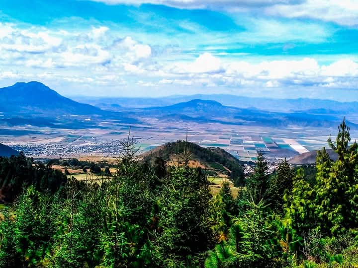
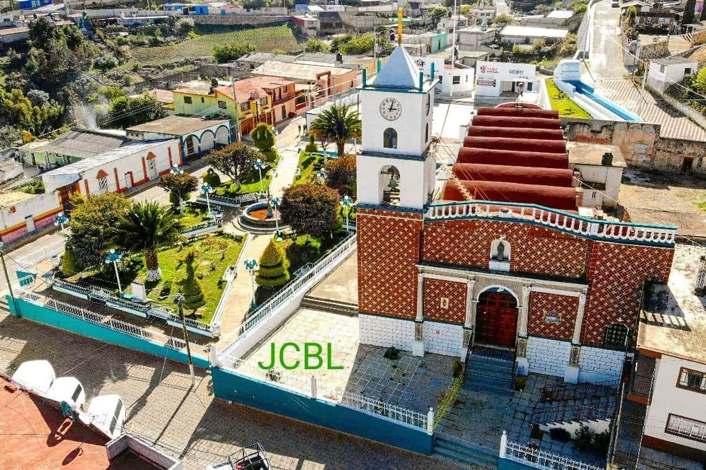

Descubre la belleza y cultura de Lafragua
Lafragua es un municipio ubicado en la Sierra Norte de Puebla, conocido por sus impresionantes paisajes naturales, su rica historia y sus tradiciones culturales. Su cabecera municipal es el pueblo de Saltillo, que no debe confundirse con la ciudad de Saltillo en Coahuila.
Imagen representativa de la geografia del municupio de Lafragua.
Lafragua se encuentra en el noroeste del estado de Puebla, rodeado de montañas y bosques. Es un lugar perfecto para quienes buscan tranquilidad y contacto con la naturaleza.
Colinda al norte con Guadalupe Victoria, al sur con Chalchicomula y Atzitzintla, al este con el estado de Veracruz, Quimixtlán y Chilchotla y al oeste con Aljojuca y San Nicolás Buenos Aires.
